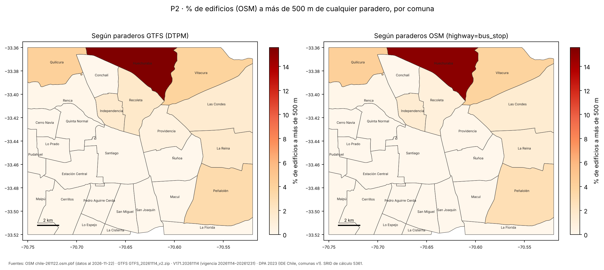
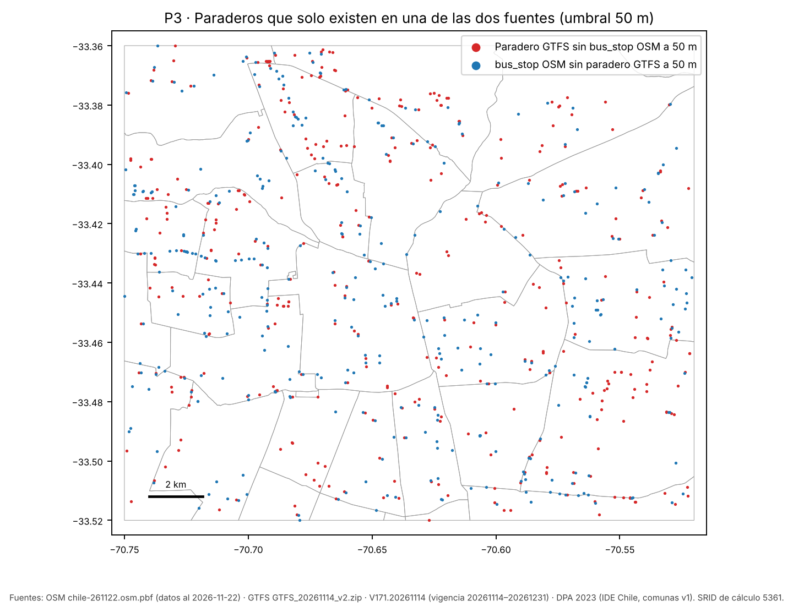
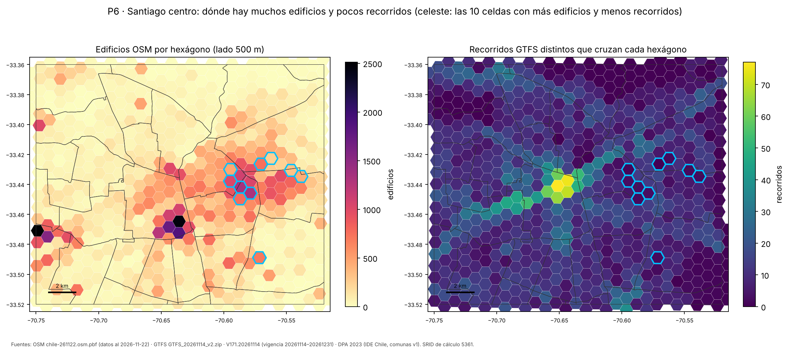
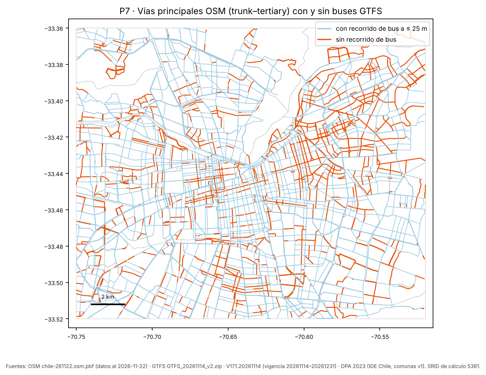

chile-261122.osm.pbf, datos al 22-11-2026 (lo que voluntarios dibujaron). GTFS: DTPM GTFS_20261114_v2.zip, versión V171.20261114, vigente 14-11 a 31-12-2026 (lo que el operador declara). Comunas: DPA 2023 de IDE Chile. Zona: caja lon −70,75…−70,52 · lat −33,52…−33,36 (30 comunas la tocan; 13 completas). Cálculo en SRID 5361.Pregunta guía: ¿cómo se relaciona la ciudad construida (OSM) con la red de transporte público (GTFS)? En la caja hay 121.207 edificios, 6.819 paraderos GTFS (6.576 de bus), 6.574 bus_stop de OSM y 699 trazados (shapes) de 344 rutas. La carga completa toma alrededor de un minuto y las 7 preguntas unos 4 minutos.
Patrón: punto-en-polígono, LEFT JOIN paraderos_gtfs ON ST_Contains(comuna, paradero) + GROUP BY. La densidad se divide por el área de la comuna dentro de la caja, porque solo se cargaron los paraderos de la caja.
| Comuna (≥ 50 % en la caja) | Paraderos | km² en caja | por km² |
|---|---|---|---|
| Lo Prado | 201 | 6,5 | 30,7 |
| Conchalí | 317 | 10,9 | 29,0 |
| Santiago | 624 | 23,2 | 26,9 |
| San Joaquín | 246 | 9,9 | 24,8 |
| Quinta Normal | 286 | 11,8 | 24,2 |
| … | |||
| Peñalolén (57 %) | 440 | 30,9 | 14,3 |
| Renca (71 %) | 239 | 16,7 | 14,3 |
| Vitacura (92 %) | 195 | 26,3 | 7,4 |
Según el GTFS de noviembre 2026, la densidad de paraderos es más alta en comunas pericentrales de trama fina (Lo Prado, Conchalí, Santiago: 27–31 por km²) que en el oriente acomodado (Vitacura 7,4; Huechuraba 8,1), donde hay cerros, manzanas grandes y vías rápidas. Las comunas apenas tocadas por la caja (San Ramón, La Granja) dan densidades poco confiables y se listan aparte.
Plan (comentado). Nested Loop Left Join: 30 comunas por Seq Scan afuera y, por cada una, Index Scan using idx_paraderos_gtfs_geom con Index Cond: (geom @ c.geom) (caja contenida en caja) y Filter: st_contains como fase 2. 17 ms. Sin el índice, son 30 × 6.819 = 204 mil ST_Contains (58 ms en una corrida previa sin índices): aquí el índice importa poco porque la tabla es chica.
Patrón: anti-join NOT EXISTS (… ST_DWithin(p.geom, e.punto, 500)), una vez contra paraderos_gtfs y otra contra paraderos_osm. Edificio = punto interior. Para evitar el efecto borde (el paradero más cercano podría estar fuera de la caja, no cargado) se excluyen los 10.216 edificios a menos de 500 m del borde de la caja.
| Comuna | Edificios | % lejos GTFS | % lejos OSM |
|---|---|---|---|
| Huechuraba | 867 | 15,6 | 15,1 |
| Quilicura | 1.481 | 4,2 | 4,3 |
| Vitacura | 3.985 | 3,9 | 3,9 |
| Peñalolén | 3.672 | 3,2 | 2,8 |
| Recoleta | 3.101 | 1,9 | 1,0 |
| La Reina | 11.423 | 1,8 | 1,3 |
| Providencia | 12.133 | 0,7 | 0,1 |
| 16 comunas más | 0,0 | 0,0 | |
| Zona completa | 110.991 | 0,95 | 0,78 |
La ciudad construida está casi completamente a menos de 500 m de un paradero: 0,95 % de los edificios queda fuera según GTFS y 0,78 % según OSM. Los bolsones están en el borde de los cerros (Huechuraba, al pie del cerro; Vitacura y Peñalolén hacia la precordillera; Quilicura industrial). La conclusión no cambia con la fuente: el orden de las comunas es el mismo. OSM sale levemente "mejor" porque tiene algunos bus_stop que el GTFS no declara (P3), lo que acerca edificios a un paradero que quizás ya no existe.
Plan. Nested Loop Anti Join paralelo: Parallel Seq Scan on edificios afuera (121 mil filas) y adentro Index Scan using idx_paraderos_gtfs_geom, Index Cond: (geom && st_expand(e.punto, 500)), Filter: st_dwithin. El índice se usa del lado de adentro (paraderos) y corta en la primera fila encontrada (rows=1): 0,40 s. Sin él serían 121 mil × 6.819 ≈ 830 millones de distancias.

Patrón: anti-join en los dos sentidos con ST_DWithin, paraderos de bus GTFS contra highway=bus_stop de OSM, con sensibilidad al umbral.
| Umbral | GTFS sin OSM | OSM sin GTFS |
|---|---|---|
| 25 m | 1.004 (15,3 %) | 996 (15,2 %) |
| 50 m | 382 (5,8 %) | 367 (5,6 %) |
| 100 m | 142 (2,2 %) | 138 (2,1 %) |
De 6.576 paraderos de bus GTFS y 6.574 bus_stop OSM. A 50 m, por comuna, OSM está más incompleto en Huechuraba (17,5 % sin pareja), Peñalolén (10,5 %) y Quilicura (9,6 %), y casi completo en Santiago (3,5 %), Macul y Cerrillos.
Las dos fuentes casi coinciden en número y lugar: a 50 m solo ~6 % de cada lado queda sin pareja, y la cifra cae a 2 % a 100 m, así que la mayor parte de la diferencia es de posición (el punto dibujado en la vereda vs. la coordenada del operador), no de existencia. Lo que queda sin pareja a 100 m son paraderos nuevos que OSM no dibujó en la periferia o bus_stop de OSM que el GTFS no declara (paraderos retirados, de servicios rurales o de colectivos). OSM en Santiago está muy completo para paraderos, pero es una foto del 22-11-2026 hecha por voluntarios.
Plan. Nested Loop Anti Join con Index Scan using idx_paraderos_osm_geom adentro, Index Cond: (geom && st_expand(g.geom, 50)): 49 ms. Con enable_indexscan y enable_bitmapscan apagados el plan pasa a Seq Scan + Materialize y evalúa 21 millones de st_dwithin: 5.949 ms (≈ 120× más lento).

bus_stop OSM a 50 m. Azul: bus_stop OSM sin paradero GTFS a 50 m. Los pares rojo-azul muy juntos son el mismo paradero desplazado.Patrón: líneas contra polígonos, sum(ST_Length(ST_Intersection(r.geom, c.geom_caja))) con JOIN … ON ST_Intersects. Se usa la parte de cada comuna dentro de la caja.
| Comuna | km (todos los shapes) | km (ida) | Rutas | km/km² |
|---|---|---|---|---|
| Santiago | 1.332,9 | 745,2 | 155 | 57,5 |
| Estación Central | 590,8 | 315,1 | 81 | 41,1 |
| Lo Prado | 258,6 | 137,5 | 69 | 39,5 |
| Providencia | 492,5 | 273,6 | 83 | 34,1 |
| Ñuñoa | 576,9 | 318,3 | 59 | 34,1 |
| … | ||||
| Huechuraba | 294,4 | 150,6 | 49 | 14,0 |
| Vitacura | 349,6 | 147,9 | 40 | 13,3 |
| Total zona | 10.006 | 344 |
La comuna de Santiago concentra 13 % de los kilómetros de servicio de la zona y 57 km por km²: todo el sistema converge al centro. Vitacura y Huechuraba tienen menos de un cuarto de esa intensidad.
Efecto de ST_Subdivide. Los km son idénticos (10.006,2) con comunas_zona, con comunas_sub (128 vértices) y subdividiendo también los recorridos. Los tiempos quedaron en el ruido: 0,80 s sin subdividir, 0,97 s con comunas subdivididas y 0,86 s con ambos lados (en otra corrida: 0,71 / 0,91 / 0,84 s). Aquí Subdivide no ayuda: recortadas a la caja, las comunas tienen 191 vértices en promedio, y lo caro de ST_Intersection son los recorridos (506 vértices y cajas de varios km). El índice idx_recorridos_geom se usa (Index Cond: geom && c.geom_caja) pero descarta poco: 115 filas removidas por filtro por cada 101 que pasan.
Patrón: CROSS JOIN LATERAL (… ORDER BY a.geom <-> p.geom LIMIT 1). Recorrido 506 (Maipú – Peñalolén), elegido porque cruza toda la zona de poniente a oriente (Av. 5 de Abril, Av. Matta, Av. Grecia). Los paraderos salen de un viaje representativo por sentido (stop_times), ordenados por stop_sequence; amenidades pharmacy, hospital, clinic y doctors de OSM.
| Sentido | Paraderos en caja | Mediana | Máx. | > 500 m |
|---|---|---|---|---|
| 0 (ida) | 59 | 308 m | 909 m | 15 |
| 1 (vuelta) | 58 | 316 m | 924 m | 15 |
Más lejanos: Av. Diagonal Las Torres / Álvaro Casanova (Peñalolén) a 909–924 m del CECOSF General Carol Urzúa; Av. 5 de Abril (Estación Central) a 700–750 m del CESFAM/Cecosf más próximo.
A lo largo del 506 la mitad de los paraderos tiene una farmacia o centro de salud (según OSM) a ~310 m; uno de cada cuatro queda a más de 500 m, concentrados en los extremos residenciales del recorrido (Maipú–Estación Central y Peñalolén alto). En el tramo central por Av. Matta (Santiago) todos los paraderos tienen una farmacia o clínica a menos de 280 m.
Plan. Por cada uno de los 117 paraderos, Limit sobre Index Scan using idx_amenidades_salud con Order By: (geom <-> pg.geom): el KNN recorre el índice por distancia y se detiene en la primera fila (0,03 ms por paradero, 8 ms en total). El índice usado es el parcial (solo amenidades de salud): con el GiST general habría que descartar bancos, escuelas y estacionamientos en orden de distancia hasta encontrar una de las 4 categorías.
Patrón: ST_HexagonGrid(500, zona) (500 m de lado, ≈ 0,65 km² por celda) en una vista materializada mv_grilla con subconsultas por celda: edificios por punto interior y count(DISTINCT route_id) de los shapes que cruzan la celda. 636 celdas (526 completas dentro de la caja), máximo 2.511 edificios en una celda; 59 celdas sin ningún recorrido, 35 de ellas con edificios. Criterio para "más edificios y menos recorridos": celdas completas con ≥ 200 edificios, ordenadas por recorridos ascendente y luego por edificios descendente.

salidas/q6_grilla_hexagonal.txt).| Comuna (centro de celda) | Edificios | Recorridos | Paraderos |
|---|---|---|---|
| Las Condes | 755 | 0 | 0 |
| Providencia | 456 | 1 | 2 |
| Ñuñoa | 768 | 2 | 10 |
| Peñalolén | 702 | 2 | 2 |
| La Reina | 428 | 2 | 6 |
| La Reina | 319 | 2 | 2 |
| Las Condes | 240 | 2 | 4 |
| Ñuñoa | 1.341 | 3 | 4 |
| Ñuñoa | 1.321 | 3 | 13 |
| Providencia | 1.028 | 3 | 6 |
Las 10 celdas forman un solo bolsón en el oriente (Ñuñoa, Providencia, La Reina, Las Condes), barrios residenciales de casas dentro de la trama entre grandes ejes. Allí hay entre 240 y 1.341 edificios por celda y solo 0 a 3 rutas, contra 20 a 77 en el eje Alameda–Providencia. Los buses corren por los ejes del borde de cada celda (por eso hay paraderos sin recorridos que crucen el interior). Ojo con el dato: en OSM "edificio" es cualquier polígono building; una celda de 1.300 casas no equivale a 1.300 torres, así que esto mide forma urbana, no población. El extremo poniente (Maipú, con 2.511 edificios en una celda y 7 rutas) es el contraejemplo: muy denso en edificios pero con más servicio.
Por qué cruza las dos fuentes: compara la red vial que existe (OSM: highway trunk, primary, secondary y tertiary) con la red de buses que el operador declara (GTFS shapes, route_type = 3), línea contra línea. Método: cada vía se corta en tramos de ≤ 50 m (ST_Segmentize + ST_DumpSegments); un tramo está "servido" si un trazado de bus pasa a ≤ 25 m de su punto medio (EXISTS … ST_DWithin). Los trazados se parten antes con ST_Subdivide(geom, 16).
| Tipo de vía | km | km sin bus | % |
|---|---|---|---|
| trunk | 2,8 | 2,6 | 90,2 |
| primary | 526,6 | 13,8 | 2,6 |
| secondary | 633,9 | 101,8 | 16,1 |
| tertiary | 900,1 | 387,4 | 43,0 |
| Total | 2.063,4 | 505,6 | 24,5 |
| Comuna | % sin bus |
|---|---|
| Las Condes | 43,5 |
| Vitacura | 39,6 |
| Providencia | 33,5 |
| Santiago | 18,5 |
| Conchalí | 8,0 |
Un cuarto de los kilómetros de vías principales de OSM no tiene ningún recorrido de bus declarado encima. Las primary están casi todas servidas (97 %), pero el 43 % de las tertiary no. Las vías principales sin buses se concentran en el oriente (Las Condes, Vitacura, Providencia: 34–44 %): Pdte. Riesco, Costanera Sur, Av. Las Torres, Diego de Almagro, Holanda y Ricardo Lyon tienen entre 3 y 6 km sin servicio cada una. Calza con P6: el oriente tiene vías, pero los buses se concentran en pocos ejes. En el centro, los tramos sin bus son en buena parte la otra calzada de pares de calles con buses en un solo sentido (el único "trunk" de la zona es un tramo corto de Av. Isabel Riquelme).
Plan. Mismo EXISTS contra los recorridos enteros: 14,0 s; contra recorridos_seg: 0,60 s (23×), con el mismo resultado. Con shapes enteros el Index Cond: geom && st_expand(medio, 25) deja pasar casi todos los shapes que tienen una caja de kilómetros; con trozos de ≤ 16 vértices la caja es ajustada y el filtro de fase 2 casi no trabaja.

docker-compose.yml con dos imágenes públicas: postgis/postgis:16-3.4 (volumen con nombre t1-pgdata) y osgeo/gdal:ubuntu-small-3.6.3 (ogr2ogr, unzip). No se construye nada, así que docker compose up -d no depende de un apt-get. Un solo script, cargar.sh, deja todo cargado, indexado y con ANALYZE (probado desde un volumen vacío y sin intermedios: 64 s). El healthcheck usa pg_isready -h 127.0.0.1 porque sin -h daba "listo" durante la inicialización y el ETL chocaba con ella.ogr2ogr -spat … -t_srs EPSG:5361 (lo mismo que preparar_datos.py del Lab 05); la DPA 2023 viene en 5360 (grados) y se reproyecta; el GTFS se construye en 4326 con ST_SetSRID(ST_MakePoint(lon, lat), 4326) y se transforma una vez. La caja se guarda en una tabla zona y todo se recorta contra ella en la base. Solo los GeoJSON de los mapas van en 4326.ST_PointOnSurface: cada edificio cuenta una sola vez aunque cruce un límite, y el punto cae dentro del edificio, a diferencia del centroide. El polígono se guarda para áreas.ST_Multi(ST_CollectionExtract(ST_MakeValid(geom), 3)) quedan 0 inválidos y 315 vacíos (anillos degenerados), que se excluyen; 203 de ellos eran edificios. Las 345 comunas de la DPA son válidas. Todo queda contado en la tabla registro_etl.COPY del lado del servidor (stop_times.txt: 1.098.717 filas; todo el COPY del GTFS toma ~3 s, en tablas UNLOGGED), con validación de cabeceras antes de cargar. recorridos: ST_MakeLine(punto ORDER BY shape_pt_sequence) por shape_id, asociado a su ruta vía trips → routes. Verificado: ningún shape es compartido por dos rutas, no hay secuencias repetidas ni shapes de menos de 2 puntos.count(DISTINCT route_id); los km de P4 se dan sumando todos los shapes (servicio) y solo la ida (≈ red). La tabla rutas junta los shapes de cada ruta para mapas. stop_times no cuenta buses reales (los viajes son plantillas con frequencies.txt), por eso se usa para saber qué rutas pasan por cada paradero, no cuántos viajes.edificios.punto), uno parcial GiST para amenidades de salud, B-tree en stop_id, route_id, trip_id; ANALYZE al final de la carga y tras cada tabla creada en consultas.pg_stat_user_indexes tras correr P1–P7 con estadísticas reiniciadas): idx_edificios_geom (4,9 MB, 0 lecturas: todo se hizo por el punto interior), idx_amenidades_geom (0: el parcial lo reemplazó), los GiST de las tablas crudas osm_* que crea ogr2ogr (24 MB, 0: después de derivar nadie las consulta), idx_comunas_sub_geom y idx_comunas_cl_geom (las comunas van siempre afuera del nested loop), idx_rutas_geom e idx_recorridos_route. Los más usados: paraderos GTFS (344 mil lecturas), paraderos OSM (242 mil), recorridos partidos (194 mil).ST_Subdivide enseñó. En P4 no aceleró (las comunas urbanas recortadas tienen pocos vértices); en P7, partir el lado de las líneas fue lo que dio 23×. La regla útil: subdividir el lado cuya caja es grande respecto de lo que se busca.bus_stop, edificios y amenidades son lo que voluntarios dibujaron en OSM al 22-11-2026; paraderos y trazados son lo que DTPM declara para el período 14-11 a 31-12-2026. Los resultados de borde (comunas cortadas por la caja, edificios a < 500 m del borde) están marcados o excluidos.